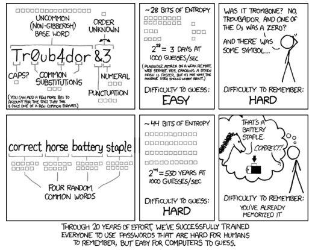
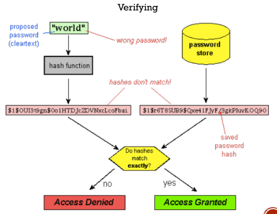
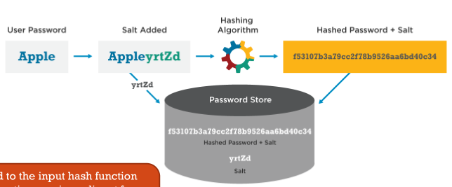
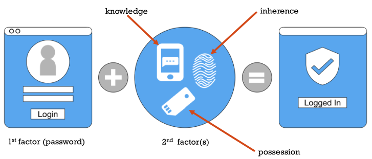
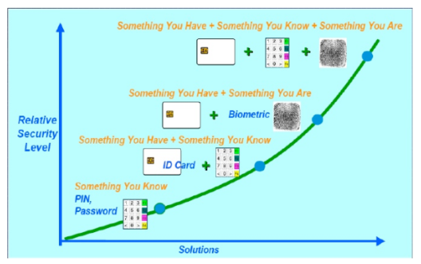
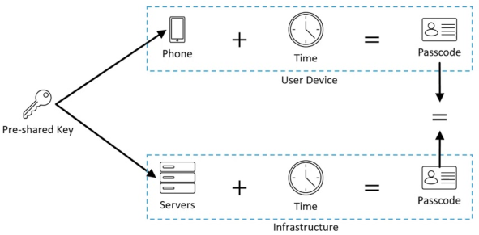

Authentication
Authentication is the process of verifying a user’s identity. There are two reasons that require authentication:
- user identity is a parameter in Access Control decisions
- user identity is recorded in an audit trial when logging security relevant events
When a person provide username and password through username announces who he is and through password proves that he is who he claims to be. This type of authentication is called user authentication. For obviously reasons password should be secretes shared only between the user and the system.
Passwords attacks
Brute force
A brute force attacks is made trying all possible combinations of valid symbols up to a certain length.
Mitigations
The main mitigation is to pick password non related to you or in general longest password possible.
Dictionary
Dictionary attack consist into trying a large number of commonly used names as possible account names and then try a large number of commonly used passwords for the account. List of accounts can be found online.
Mitigations
The main mitigation is to change default passwords avoiding guessable passwords. Best practice to create password is explained in following image

Spoofing
Attackers starts a program that presents a fake login screen and leaves the computer. The next user of that machine will enter his credentials and attacker steal them.
Mitigations
Main mitigations are:
- display number of failed logins
- trusted path using for example CTRL+ALT+DEL on windows
- use mutual authentication: user authenticated to the system, system authenticated to the user
Phising
Password hashing and salting
A hash function is a 1-way function f that is relatively east to compute bu hard to reverse. Instead of storing plain password, value of f(x) is stored in the passwords files, when a user try to login the system compute the hash in order to avoid storing password in clear inside the file.

The requirements of a hash function are:
- ease of computation → given x, it easy to compute h(x);
- compression → maps inputs x of arbitrary bit-length to outputs h(x) of a fixed-bit-length n;
- one-way → give a value y, it is computationally infeasible to find an input x so that h(x) = y;
- weak collision resistance → given an input x and h(x), it is computationally infeasible to find another input \(x' | x \ne x'\) with \(h(x) = h(x')\);
- strong collision resistance → it si computationally infeasible to find any two inputs \(x, x' | x \ne x'\) with \(h(x) = h(x')\)
Most famous hash functions are:
- MD4 → weak and computationally feasible to find meaningful collisions
- MD5 → now broken and no longer recommended
- SHA-1 → designed to operate with the US Digital Signature Standard (DSA). Collisions attacks reporter
- RIPEMD-160 → frequently used by European cryptographic service providers
- SHA-256 → evolution of SHA-1
Problems
Main problems with hashing passwords are:
- dictionary attacks → explained above. If users use the same common passwords, also the hashes are equal. An attacker can use this information and deduce the original password;
- rainbow tables → data structure that aims to reduce storage requirements at the cost of slightly longer lookup-times.
Possible mitigation is salting.
Salting

Let \(f(x)\) as the hashed password of \(x\) and salt a fixed-length random value. In order to slow down dictionary attacks, a salt is appended to the password before encryption and store with the encryption password. Using salting allow two users to have the same password having, at the same time, two different hashes.
Extensions of password based authentication
Multi factor authentication (MFA)

Authentication method in which a computer user is granted access only after successfully presenting two or more factors to an authentication mechanism:
- knowledge → something the user and only the user knows;
- possession → something the user and only the user has;
- inherence → something the user and only the user is.

An example of MFA is Two-Factor authentication (2FA). Main pros and cons of using smartphones as part of MFA are:
- no additional tokens are necessary;
- dynamically generated passcodes are safer to use than fixed (static) log-in information.
But
- mobile phone may be unavailable in some situations;
- SIM used in mobile phone can be cloned;
- text messages with 2FA codes can be stolen;
Time based one time password (TOTP)

The main idea is that authenticator and authenticated compute the TOTP value then the authenticator checks if the TOTP values supplied by the authenticated matches the locally-generated TOTP value. The input parameters of this algorithm are:
- T0 → unix time from which to start counting steps
- Tx → interval which will be used to calculate the value of the counter
The main problem is that shared key used to generate TOTP values can be stolen as any other keys (for example in 2007 lockheed martin).